1 シラバスの確認
1.1 基本情報
- 学年・学科: 2年 総合工学システム学科
- 単位数: 2単位 (通年・履修単位)
- 分類: 知能情報コースの基盤専門科目
- 卒業要件： DP-D
- 担当教員： Takeshi Wada (知能情報コース)
- 各種連絡や質問などは、原則として TeamsChat にお願いします。
- 電子メールによる連絡はしないでください。
- 各種連絡や質問などは、原則として TeamsChat にお願いします。
本科目の通称は「PG1」です。シラバス もあわせて参照しておいてください。
1.2 関連科目
知能情報コースの専門科目には ソフトウェア系、ハードウェア系、応用情報科学系 の 3系統 があります。本科目との関係が深いソフトウェア系と応用情報科学系の科目は以下のようになります。
- 2年 後期 マイクロコンピュータ
- 3年 前期 プログラミング2 (C言語)
- 3年 後期 プログラミング3 (ウェブ系開発)
- JavaScript/TypeScript, HTML, CSS, React, Next.js
- Supabase, Vercel, GitHub Actions
- 3年 前期 アルゴリズムとデータ構造1
- 3年 通年 知能情報実験実習1
- 前期に「Python」を使用した ウェブスクレイピング のテーマがあります。
- 後期に「Python」を使用した 画像処理 のテーマがあります。
- 4年 前期 アルゴリズムとデータ構造2
- 4年 後期 データベース工学
- Docker, PostgreSQL, MongoDB
- 4年 通年 マルチメディア情報処理
- 5年 前期 ソフトウェア工学
- 5年 通年 人工知能
本校が 教育理念 として掲げる 進取の精神 を意識し、興味・関心のある分野については、授業が開講されることを待たずに、ウェブや書籍、生成AIなどを活用して主体的に学習を前倒しで進めてください。
また、特定の分野に興味・関心があるものの「取っ掛かり」や「ロードマップ (＝学習の道筋・体系的な学習方法)」が見えないといったときは、遠慮なく気軽にコースの先生方に相談してみてください。
＜ 誰に相談すればいいか分からないときは、まず 和田 か 土井先生 (主任) に相談してください。
環境を最大限に利用して、主体的に「学び」を切り拓いてください
たとえば、人工知能について学びたくて「知能情報コース」を選択した学生もいると思います。そんな学生が「人工知能」の授業が開講される5年生まで、ただ待ち続けるのはあまりにも愚かでもったいないことです。
ウェブには優れた 学習ロードマップ や 教材 が公開されていますし、AIも学習を強力にサポート してくれます。また、同じ興味関心を持っているクラスメイトも高確率でいるはずで、友達となって共に学べばより楽しく、DCONなど、より魅力的で大きなことに挑戦することができます。さらに、コースには相談や質問に応じてアドバイスをしてくれる教員もいます。
受け身で「与えてもらうこと」を待つのではなく、知能情報コースという「環境」を最大限に活用して自分から「学び」と「キャリア」を切り拓いてください。
＜ 早く行きたければ一人で行け。遠くへ行きたければみんなで行け。
プロンプト例
ウェブスクレイピングとはなんですか？
学習の文脈において「ロードマップ」とは何ですか？
1.3 授業概要
プログラミング (Programming) は ICTエンジニア（特に ソフトウェアエンジニア ）にとって、最重要スキルのひとつに位置づけられます。
また、理工学分野の学び（情報工学系科目をはじめ「数学」や「物理」などの学び）においても、プログラミングは 理解の深化のための強力な道具や手段 となります。
👉 Pythonを使ったベクトルの幾何変換の可視化の例 (第20回講義)
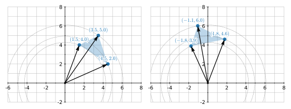
本科目では、そのような位置付けにある プログラミングの「導入教育」として、主に Python言語 (パイソン言語) を使ってプログラムに関する概念や用語、設計、実装、デバッグ、管理 (GitHubなど) について 経験的に習得すること を目指します。
プロンプト例
ICTエンジニアの「ICT」とは何ですか。
プログラムの文脈で「デバッグ」とはなんですか？初学者向けに解説して。
GitHub とはなんですか？初学者向けに解説して。
「これ何？」はAIで即チェック🚀
講義資料で「これ何?!」と思った専門用語があったら、ChatGPT や Gemini などの生成AIで気軽に調べてみてください。既に知っているつもりの言葉も、改めて調べてみると意外な発見もあり、理解も一段深くなります。
また、科目では、将来の就職やインターンシップに向けて「ポートフォリオ」を作成してもらうために HTML/CSS についても学びます (夏休み明けの10月頃を予定)。
- ポートフォリオの作成例 2025-2I (学内のみ OneDrive)
- ポートフォリオの作成例 2025-3I ( 〃 )
- ポートフォリオの作成例 2025-4I ( 〃 )
さらに、実装演習では 高専1・2年の「数学」や「物理」を題材としたもの も取り上げて、実装力の向上と同時に「数学」や「物理」について、プログラミングを通じて理解を深めることもします。
プロンプト例
ICT分野の就職の文脈で「ポートフォリオ」とはなんですか？
プログラミング学習の文脈で「実装」とはなんですか？初学者向けに解説して。
1.4 科目の達成目標
本科目の 達成目標 (＝1年の皆さんのあるべき姿) として、次の項目を掲げています。シラバス からの抜粋です。
- Python の 開発環境 および 実行環境 を構築できる。
- IDE (統合開発環境) や バージョン管理システム などの各種開発ツールを効果的に利用できる。
- 条件分岐、繰り返し処理、関数、クラスを使用して 基本的な構造化プログラミング ができる。
- Python の多様なライブラリを活用して 日常生活や学習に有用な小規模アプリの開発 ができる。
- エラーや意図せぬ結果が生じたとき、その原因の特定と解決に向けて適切なアプローチができる。
プロンプト例
プログラミングの分野で「バージョン管理システム」とは何ですか？初学者向けに手短に解説して
プログラミングの分野で「構造化プログラミング」とは何ですか？初学者向けに手短に解説して
1.5 成績評価法
総合成績（学年末の最終成績）は、次のように評価します。
- 各達成目標に対する到達度を、課題70%、小テスト30% の割合で総合して評価する。
- 100点法により評価し、60点以上を合格とする。
「中間試験」や「期末試験」などの筆記形式の定期試験は 実施しません。
1.5.1 小テストについて
小テストを実施するときは、その前回の講義資料のなかでアナウンスします。昨年度は、全部で 8回 の小テストを実施しました。本年度も、それに準じた回数の小テストを予定しています。
小テストを実施した授業に遅刻・欠席した場合
遅刻や欠席（公欠・忌引き・出席停止を含む、理由を問わない）により、小テストを受験できず追試験を希望する者は、当該授業日を含めて2日以内に、TeamsChat で追試験の実施依頼 の連絡をしてください。
例えば、4月20日（月）の授業で実施した小テストについて、追試験を依頼する場合は、4月21日（火）の23時59分までに、TeamsChat で依頼の連絡を送ってください。
実施依頼には、具体的な希望の日時 (原則として次回授業日までの平日 8:45 ～ 17:15 の時間帯) を3案ほど添えてください。「放課後」や「先生の空いている時間」といった抽象表現は不可とします。また、感染症等により登校再開日が未定で希望日時を挙げられない場合でも、その旨と追試験希望を明記し、期限内に連絡してください。
小テストの追試験は、理由に関係なく1人あたり4回を上限とします。4回に達した後の欠席や遅刻による小テスト未受験については、0点で評価します。
1.5.2 課題提出について
各種トラブルを想定・予見し、十分な時間的余裕をもって課題に取り組み、期限を守って提出してください。特別な事情 (＝週末にクラブの大会がある、資格試験があるなど) により期限までに提出困難な場合は、(遅くとも期限１週間前までには) 事前相談してください。事情や状況に応じ、期限延長や、期限超過の減点免除などを検討します。
- 期限を過ぎてからの相談や延長依頼については、原則として、対応しません。
- 「期日までに連絡もせずに課題を提出しない」ということは、仕事で言えば 上司や顧客から依頼を受けた仕事を勝手に放棄・放置するような行為 に相当します。
1.6 授業の「進め方」について
本科目では、最初の2～3回の講義を除いて セルフペースド学習 (自己調整学習) を前提に授業を提供していきます。
皆さんは「2年知能情報コース」という括りでは同じですが、個人のプログラミングのスキル・経験には相当なひらきがあります。中学時代を含めて、これまでにクラブ活動や趣味で「日常的にプログラミングをしてきた学生」と「学校授業の枠内でしかプログラミングを触ってきていない学生」では、学習時間に 数百時間ほどの差 があるのが現状です。
そのため、教員で主導して一斉進行のスタイルで授業をすると、どうしても個人レベルでは多数の不満😠が生じます。具体的には 授業が簡単すぎる/難しすぎる、進行が遅すぎる/早すぎるという不満 といったものです。
そこで、この科目では、公大高専・知能情報コース2年生に最適化した学習ロードマップに基づく講義資料（ウェブテキスト）を提供し 学生各自が自分のレベルに応じて、学習の速度 (ペース) と理解の深さ (どこまで深掘りするか) を主体的に調整しながら学ぶセルフペースド学習 を採用しています。
教員は、授業中に教室を巡回するので、講義資料を読んで試行錯誤してみても解決しないこと😭、理解できないこと😵💫があれば、遠慮することなく個別に声をかけてください。
プロンプト例
セルフペースド学習 (自己調整学習) とは、どんな学習のスタイル／方式ですか。学校のプログラミングの授業との相性は良いのですか？
1.6.1 そこそこのプログラミング経験がある学生は…
これまでにプログラムを自学してきた学生は、1回分の講義資料の表面的な内容は30分程度で終えてしまう と思います。余った時間は深い掘り下げや、別のプログラミング関連の学習に使ってください。ただし、プログラミングや情報工学に関係のない取り組みは NG とします。
- 特にやるべきことがなければ Pythonで釣りゲームを作ろう や 他の高専や大学のPython教材の演習 に取り組んでみてください。
なお、周囲の学生からヘルプを求められたときは、サポートしてもらえると教員としては大変ありがたいです🙇♂️。また、昨年度の講義資料 を参考に、先取りして学習や「課題」に取り組んでもらっても OK です。
中級者向けの情報
中級者向けの情報は、この紫色のコラムで提供します。初学者は読み飛ばしてください。学習の初期段階では、かえって混乱するような内容を含みます。
1.6.2 プログラミング経験がほぼゼロの学生は…
90分の授業時間では1回分の講義資料の最後まで到達しないこともあると思います。その際は、多少大変であっても授業時間外に必死に取り組んでほしい と思います。
最初のうちは、できる学生との差に絶望することがあると思いますが、それは単純に積み重ねてきた学習時間 (数百時間) の差です。落ち込むことなく学習を積み重ねてください。
- 部活や趣味で週3日2時間ぐらいプログラミングをしていると、3年間で「900時間」を超える学習時間になります。
2 AI共創時代に「プログラミング」を学ぶ意義
最近「AI がプログラムを書いてくれるなら、もうプログラミングを学ぶ必要はないのではないか」という意見を耳にする機会が増えてきました。たしかに Codex や Claude Code のようなコーディングエージェント (AI) を使えば、自然言語 (日本語や英語) による指示でソフトウェアが開発できるようになっています。
しかし、そのソフトウェアが「まとも」であるのは、プログラミングの知識と経験を持つエンジニアが、コーディングエージェント (AI) を活用して開発した場合に限られます。
プログラミング経験がない人が書いた仕様書や設計書、あるいは曖昧な指示をもとにAIに開発させたソフトウェアは、表面上は問題なく動いているように見えても、一定の品質や安全性が担保されたものにはなりません。ソフトウェアの品質は、コードそのものだけでなく、仕様の段階でエラー処理・セキュリティ・保守性といった非機能要件がどこまで考慮されているかに大きく左右されるためです。しかし、プログラミングの経験がないと、そうした観点を仕様に盛り込むことが難しく、また、何が適切で何が問題なのかを判断する基準もないため、潜在的な不具合やリスクを残すことにつながります。
- 野球で例えるなら、競技経験のない人が「監督」としてチームを指揮し、選手にプレイを指示するようなもの です。
これからのソフトウェア開発において、AI 活用は必須となります。ただし、AIに適切な指示を与え、その挙動を制御しながら成果物の妥当性を判断するには、ソフトウェア設計とプログラミングの知識と経験が不可欠です。AI に依存し開発を丸投げするのではなく、手綱をしっかり握ってコントロールする という使い方が必要で、本科目では、その土台となるものを学んでいくと考えてください。
ソフトウェア開発においては、「AI があるからプログラミングを学ぶ必要がない」ではなく、「AI を使いこなすために、プログラミングを学ぶ必要がある」というのが実際のところです。
「プログラミングの知識と経験はありませんが、AI を使ったバイブコーディングで無双してきました」という人材が、ソフトウェアエンジニアとして採用されたり、フリーランスの案件を獲得したりすることは、まずあり得ません。また逆に「プログラミングの知識と経験はありますが、AI を活用した開発はやったことがありません」という人材についても、今後、選択肢が狭まっていきます。
これからの時代の ソフトウェアエンジニア に求められるのは、プログラミング (ソフトウェア設計) の基礎力と AI 活用スキル の両方となります。この2つを意識して学びを進めてください。
- 「プログラミングの知識と経験はありませんが、AI を使ったバイブコーディングで無双してきました」という人は、むしろ、スタートアップ創業者、プロダクトマネージャ、マーケターとして活躍できる可能性を秘めています！
2.1 生成AIの利用について
この授業では生成AIの利用に関して特に制限を設けていません。プログラミング学習に各種AIを賢く活用してほしいと思います。
ただし、本質を見失わないように十分に注意してください。授業を通じて皆さんに演習や課題に取り組んでもらうのは 理解を深めてもらうため、スキルアップしてもらうため です。取り組みの「過程」に意味があるのであって、成果物であるプログラムそのものには大して意味はありません。
理解の深化やスキルアップに結びつかないような AI の使い方をしていると、早ければ1年後には詰みます。遅くとも進学や就職の段階になって詰み状態になります (あるいは極端に将来の選択肢が制限された状態になります)。
- 小学校で習う「九九」や「分数」について分からぬまま、中学に進むことを想像してください。
- 悲惨😱ですよね。同様に、(AIに依存して) 基礎的なプログラミングスキルすら修得せぬまま社会に出ることを想像してみてください。
皆さんが授業を受ける理由は 「進級」や「卒業」という記号を得るためではありません。自己の知識や理解、技術の習得が目的です。
授業のなかで「演習」や「課題」に取り組むのは、そのための「手段」です。単位取得や進級、卒業は単なる目標 (≠目的) にすぎず、その過程で獲得する知識やスキルに価値があること を勘違いしないようにしてください。
3 GoogleColab (Python実行開発環境)
これからしばらくは、Pythonの実行開発環境として Google Colaboratory（グーグルコラボラトリー）という クラウドサービス を利用していきます。通称は GoogleColab (グーグルコラボ) です。
GoogleColab の利用にはインターネット接続が必須ですが、ウェブブラウザだけで簡単にプログラミングをはじめることができます。本科目では GoogleChrome を標準ブラウザとして使用します。
- GoogleColaboratory
- ブックマークしておいてください。Chrome では
Ctrl+Dでブックマーク登録ができます。 - 個人ではなく、学校の Googleアカウント (
@st.omu.ac.jp) でログインして利用してください。
- ブックマークしておいてください。Chrome では
6月下旬には 個人PCのなかにも Pythonの実行開発環境を構築 してもらいます。具体的には、VSCode を IDE ( Integrated Development Environment: 統合開発環境) として利用して開発するスタイルに移行します。さらに、皆さんが想定以上に意欲的に取り組んでくれれば、Dockerを活用した開発・実行環境の構築なども体験してもらいたい と思っています。
- 前年度、前々年度、前々々年度には Docker には到達しませんでした。
Tips：もし、GoogleColab が有料化されたり、サービス終了してしまったら?
ローカルPCに JupyterNotebook（ジュピターノートブック／ジュパイターノートブック）という環境を構築すれば、GoogleColab とほぼ同様の開発ができます。そもそも、JupyterNotebook を Google が独自拡張し、ウェブサービス（クラウド型）として提供したものが GoogleColab です。
仮に、GoogleColab のサービスが終了しても、それまでに開発したプログラムはローカルPCの JupyterNotebook に引き継ぐことができます。授業のなかでも JupyterNotebook の環境構築を取り上げます。
GoogleColab についての詳しい情報（FAQ）はこちら
中級者向け: VSCodeの拡張機能で Colab を利用
Google Colab の「ノートブック」を VSCode から実行できる 拡張機能
があります。必要に応じて利用してみてください。当該拡張機能の識別子は google.colab
です。
プロンプト例
JupyterNotebook ってなんですか？GoogleColab とはなにが違うの？
Docker ってなんですか？なんか先生が、Python の開発・実行環境を Docker で構築する云々いってたのですが…
3.1 ノートブックの新規作成
- GoogleColaboratory
にアクセスして「＋ ノートブックを新規作成」を選択してください。
- 注意⚠️: 個人アカウントでログインしている場合は、学校のアカウント に切り替えてください。
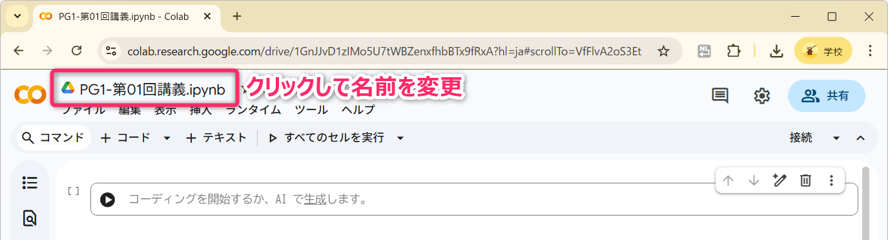
- ノートブックの名前は
PG1-第01回講義.ipynbとしてください。拡張子ipynbは IPython Notebook の略であり、Interactive Python Notebook と覚えるとよいです。Interactive は「対話的」という意味です。 - 作成したノートブックは、Googleドライブ の
Colab Notebooksのなかに配置・保存されます。
3.2 設定 (AIアシスタントの設定)
Colab の「AIアシスタント」を次のように設定してください (必要に応じてカスタマイズしてください)。
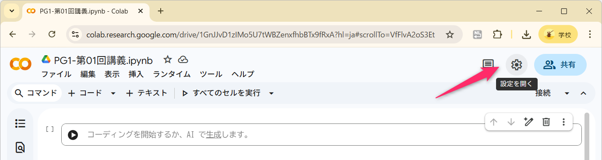
以下の ❷ の「コード補完」は実開発では非常に有用ですが、学習時には無効化しておくことを強く推奨 します。
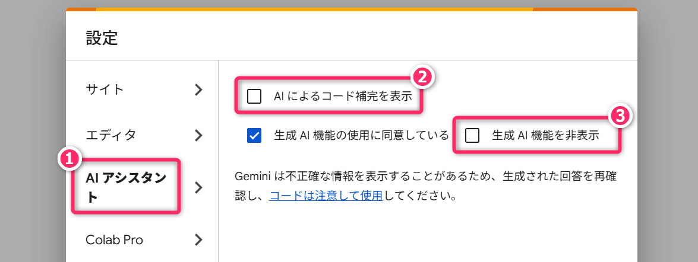
また、「エディタ設定」も、次のように設定してください。
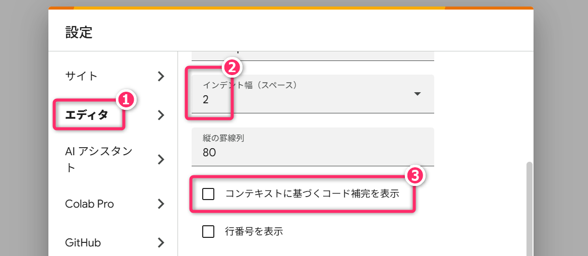
3.3 コードセルの追加と編集・実行
コードセルは、ノートブックのなかで「Pythonプログラム」を記述するための領域です。
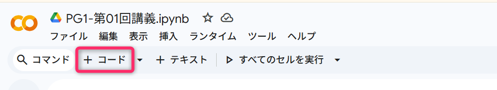
- コードセルの実行は [Ctrl]+[Enter]
- コードセル上下移動と削除
3.4 テキストセルの追加と編集
テキストセルは、ノートブックのなかでマークダウン形式で「メモ」を記述するための領域です。
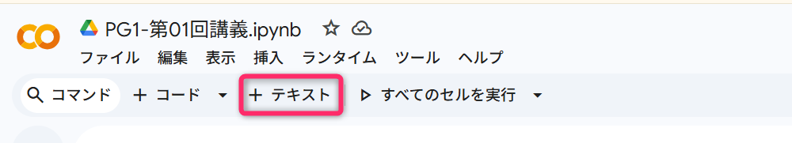
- 見出し
# - 箇条書き
- - コード
`code`バッククォート - 文字の強調
**文字**
プロンプト例
マークダウン形式でメモを記述するってどういうことですか？そもそもマークダウンとはなんですか？
3.5 ノートブックの保存と再開
作成したノートブックは、Googleドライブ の
Colab Notebooks のなかに配置・保存されます。
プログラミングを再開するときは、以下の手順で再開できます。
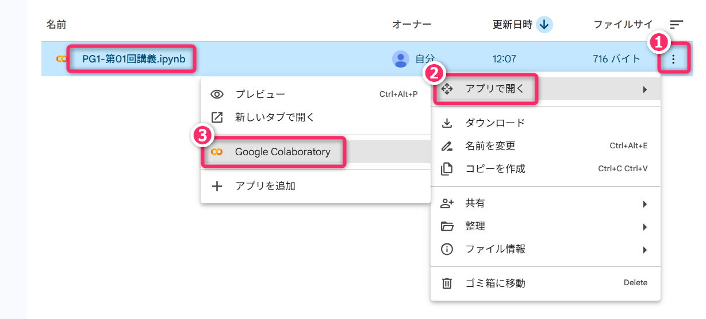
また、Colab から、以下の手順で再開することもできます。
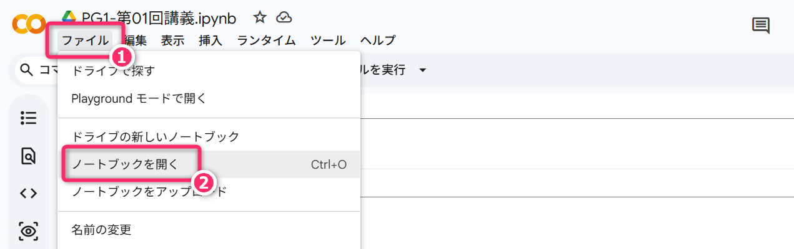
4 ノートブックがフリーズしたときの対処法 (必読)
Colab のノートブックが フリーズしたとき (＝処理が終わらない、操作を受け付けない状態になったとき) は、次の手順で「セッションを再起動する」を実行してください。
その後、再度、コードセルで Ctrl+Enter で実行してみてください。

それでも解決しないときは ウェブブラウザを再起動 してください。それでもなお解決しない場合は、新規にノートブックを作成してください。
5 文字列の扱いと出力
Colabに慣れるため基礎中の基礎である「文字列」の出力について体験してみます。実は非常に奥深い領域です。
5.1 文字列の出力1
文字を画面出力するためには print 関数 (Function)
を使用します。厳密な表現をすると「文字列リテラルを標準出力に出力するためには、組込み関数の
print を使用します」という表現になります。
- 指示に従って、コードセルを作成、コードセルに貼り付け、コードセルの実行をおこなってください。
- コード (プログラム) の実行は、クリックでセルを選択して
Ctrl+Enterを押下します。
プロンプト例
GoogleColab を使って Python プログラムの勉強をしています。
%reset -fの意味と必要性を教えてください。
Python プログラミングの勉強をしているのですが、「文字列リテラル」ってなんですか？「リテラル」の意味がわかりません。
5.1.1 演習
- 第02行目 を
print(Hello World)のように シングルクォートなし にすると、どのようになるか試してください。 - 第02行目 を
print("Hello World")のように ダブルクォート にすると、どのようになるか試してください。 - 第02行目 を
print('Hello World)のように クォートの閉じ忘れをすると、どのようになるか試してください。 - 第02行目 を
print ( 'Hello World' )のように スペースを含める と、どのようになるか確認してください。- 全角スペースを含めたときの動作 (エラー) についても確認してください。発生するエラーの名称も覚えておいてください。後日の小テストで出題されます。
- 第02行目 を
print ('Hello World')のように 文頭にスペースを入れると、どのようになるか確認してください。- 発生するエラーの名称も覚えておいてください。
%reset -fを削除すると、どのようになるか確認してください。
プロンプト例
Python プログラムの勉強をしているのですが、
print('Hello World')とprint("Hello World")の違いがわかりません。どのように使い分けしますか？
GoogleColabで Python プログラムの勉強をしているのですが、コードセルで先頭に
%reset -fを書いてprint('Hello World')を実行しても、それを書かずにprint('Hello World')を実行しても結果が変わりません。何のために書く必要があるのですか？
5.2 Gemini の活用法
Google Colab では、その内部から Gemini を呼び出すことができます。学習段階では、専属の「家庭教師」のように頼ることができます。
5.2.1 任意のコードセルのプログラムについて説明してもらう
対象のコードセルを選択 👉 コードを説明する
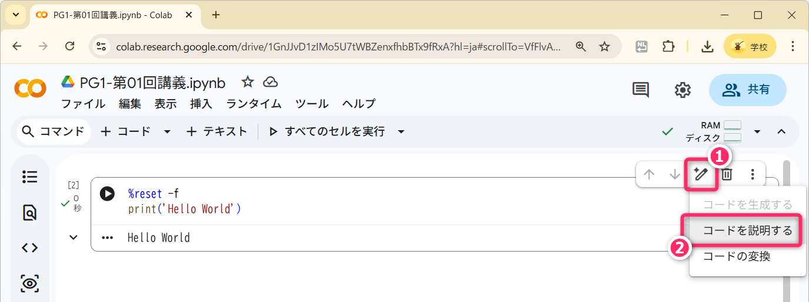
5.2.2 任意のコードセルのプログラムに任意の質問をする
対象のコードセルを選択 👉 コードの変換
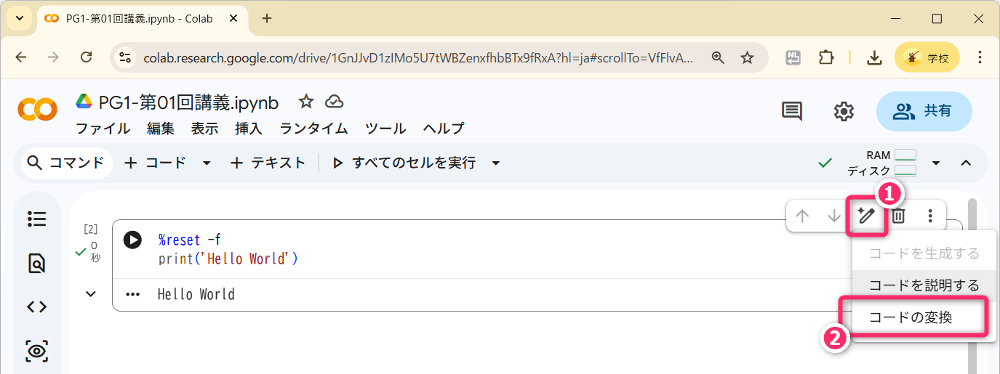
プロンプト例
このコードの各行が何をしているか、Python初心者がキーワードを覚えられるようにコメントを追加して
このコードセルに書いてあるプログラムの文法や処理を、ちゃんと理解できているかを確認するための問題 (日本語で説明) を作成して、「新しいコードセル」に記述してください。
5.2.3 学習モードに切り替え
学習モードに切り替えると、答えを直接的に示すのではなく「そのコードがなぜそう動くのか、どんな概念に基づいているのか」をステップバイステップで解説してくれます。つい先週 (4月9日) に実装されたモードです。
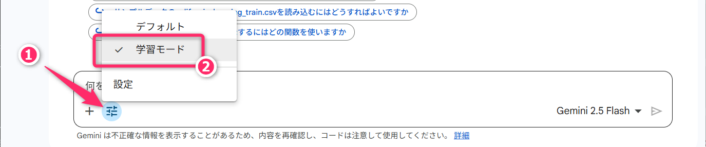
5.2.4 エラーを説明
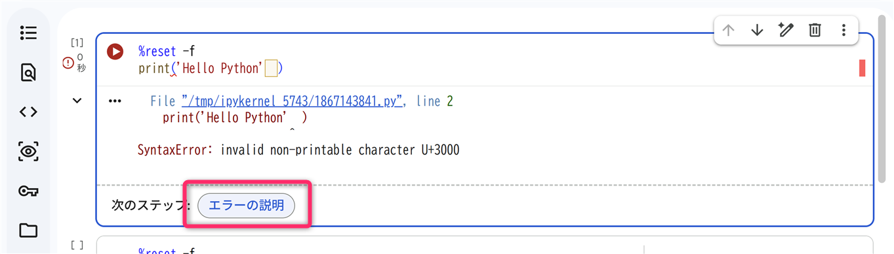
表示された説明が不明なら
プロンプト例
なぜこのエラーが起きたのか、中学生にもわかるように例え話で教えて
5.3 文字列の出力2
- 標準出力 (Standard Output)
print関数- 「シングルクォーテーション」と「ダブルクォーテーション」
プロンプト例
Pythonの文字列のなかで使用する
\nってなんですか？
プログラミングをしているのですが、スラッシュの逆向きの記号が入力できません。円マークが表示されます。
Python で
print('\U0001F923')を実行すると絵文字が表示されるのは、どういう仕組みですか？先生がprint('🤣')よりも確実な方法っていっていたんですが、どうして確実なのですか？
6 演習
次のような文字列を出力する Pythonプログラムを作成し、実行結果を確認してください。ただし、実装のアプローチが異なるプログラム (記述の仕方が異なるプログラム) を2つ以上作成してください。
Pythonの世界へようこそ！
Hello, World!
これがあなたの最初のプログラム出力です。この演習で伝えたいことは、プログラミングには「正解」というものがひとつだけとは限らない ということです。創造性を発揮し、異なる角度から問題にアプローチする気持ちを持ってください。ある問題に対して多様な解決策が存在し、それぞれが独自の価値を持っていることを理解することが、深い学びにつながります。
同時に 遊び心 を持つことも極めて重要です。標準的でない方法を試すことが、予想外の発見や理解の深化につながります。プログラミングは「技術」だけでなく「創造的な表現の場」でもあります。
- エンジニアだけではなく クリエイタ としてのマインドも持ってください。
6.1 参考 (まずは、自分で「演習」に取り組んでから読んでください)
演習の解答例です。プログラミングの世界には、正解はひとつではなく無限に存在すると考えてください。
%reset -f
import time
msg = 'Pythonの世界へようこそ！\nHello, World!\nこれがあなたの最初のプログラム出力です。'
for char in msg:
print(char, end='', flush=True)
time.sleep(0.1)
print()%reset -f
RED = '\033[31m'
GREEN = '\033[32m'
RESET = '\033[0m'
print(RED + 'Pythonの世界へようこそ！' + RESET)
print(GREEN + 'Hello, World!' + RESET)
print('これがあなたの最初のプログラム出力です。')%reset -f
from IPython.display import display, HTML
html = '''
<style>
@keyframes fadeIn {
from { opacity: 0; }
to { opacity: 1; }
}
.fade-in {
animation: fadeIn 4s ease-in-out;
}
</style>
<div id="animated-text" style="background-color: black; color: white; padding: 10px; text-align: center; ">
<p class="fade-in">Pythonの世界へようこそ！<br>Hello, World!<br>これがあなたの最初のプログラム出力です。</p>
</div>
'''
display(HTML(html))プログラミング学習では、「プログラムコード」と「その実行結果」を対応づけながら、その背後にある仕組みや規則性を理解し、自分なりの「メンタルモデル」を構築していくこと が重要です。メンタルモデルとは、「物事の仕組みや因果関係（こうしたら、こうなるはず）について、頭のなかに構築したイメージ」 のことです。
ここで大切なのは、完璧なモデルを最初から持つことではなく、自分の学習段階に応じて納得できるモデルを持ち、必要に応じて更新していくことです。たとえば、幼稚園児は 太陽が地球のまわりを回っているから昼と夜がある というメンタルモデルで「昼夜の仕組み」を理解しており、その段階ではそれで十分です。しかし、小学校高学年になり星の動きや季節の変化を学ぶと、そのモデルを 地球が太陽のまわりを回っている に更新する必要が出てきます。
プログラミングも同じです。最初は「こう書いたらこう動くはず」という自分なりのイメージを持つことから出発します。たとえば変数を「値を入れる箱」と捉えると、多くの場面でうまく説明がつきます。しかし学習を進めるうちに、そのモデルでは説明しきれない場面に出くわします。このとき感じる「あれ、思っていたのと違う」という違和感こそが、モデルを見直すきっかけになります。こうして実行結果とのズレを手がかりにモデルを更新し続けることが、プログラムを深く理解していくための道筋となります。
そして、このプロセスを機能させるために不可欠なのが、実際に自分でコードを書いてみること（打ち込んでみること） です。新しい内容を学んだとき、そのプログラムをコピペで済ませず、自分の手で入力して実行結果を確認してください。頭の中で想像した動きと実際の結果を照らし合わせることで、自分の理解のズレに気づくことができます。「理解できた」と感じていても、それが思い込みにすぎないことは少なくありません。